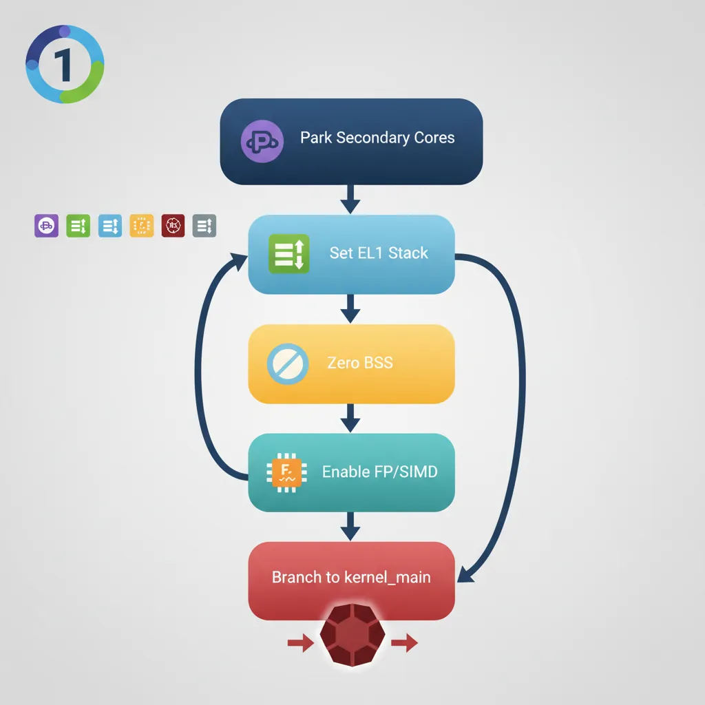
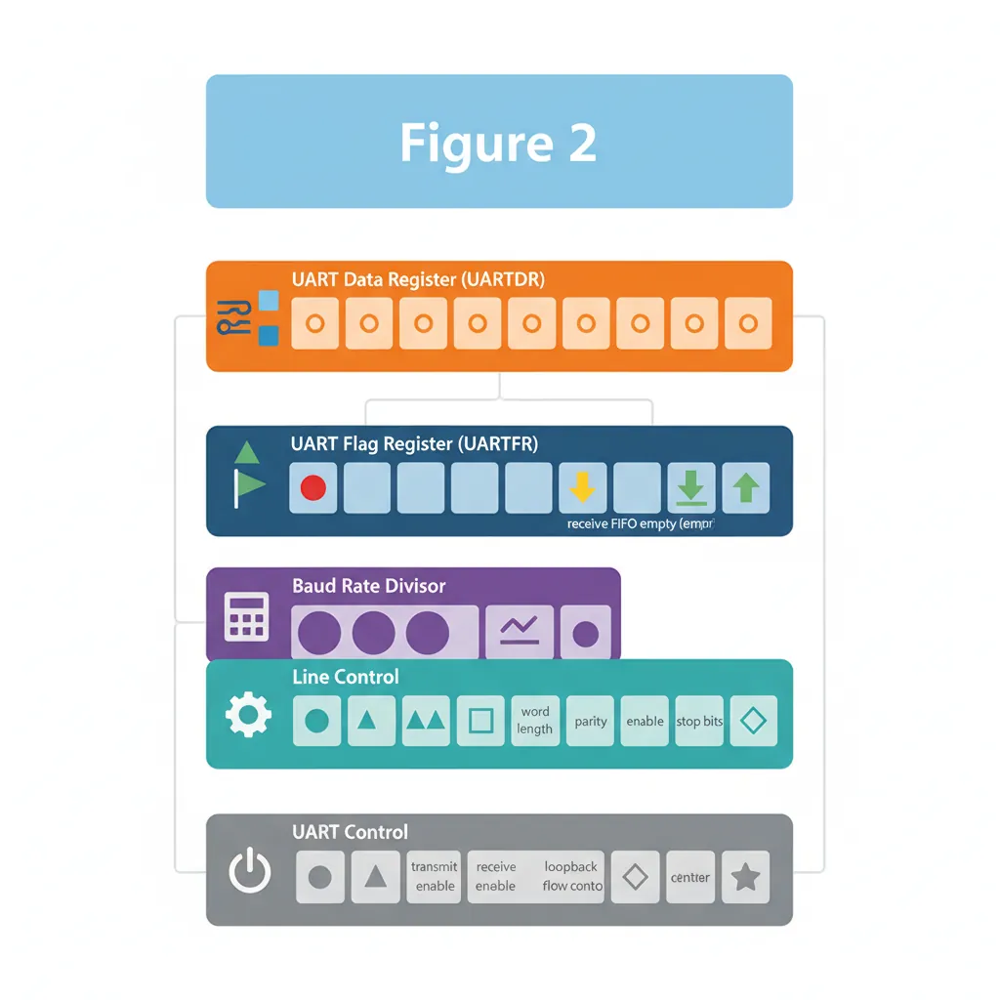
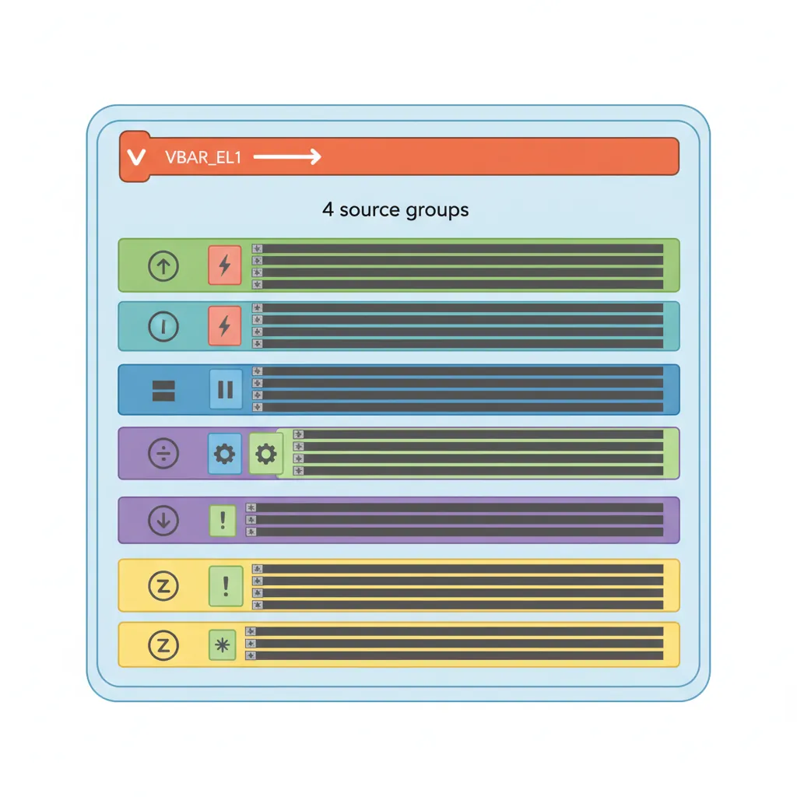
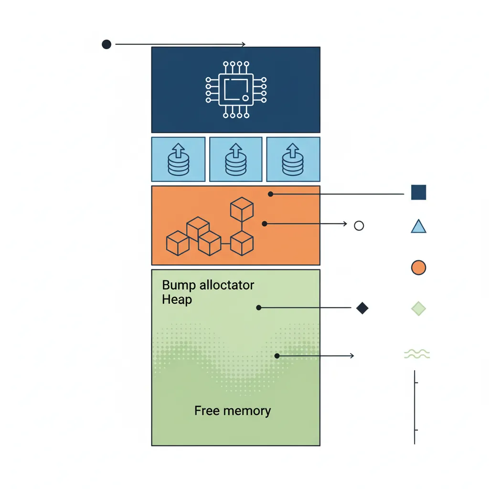
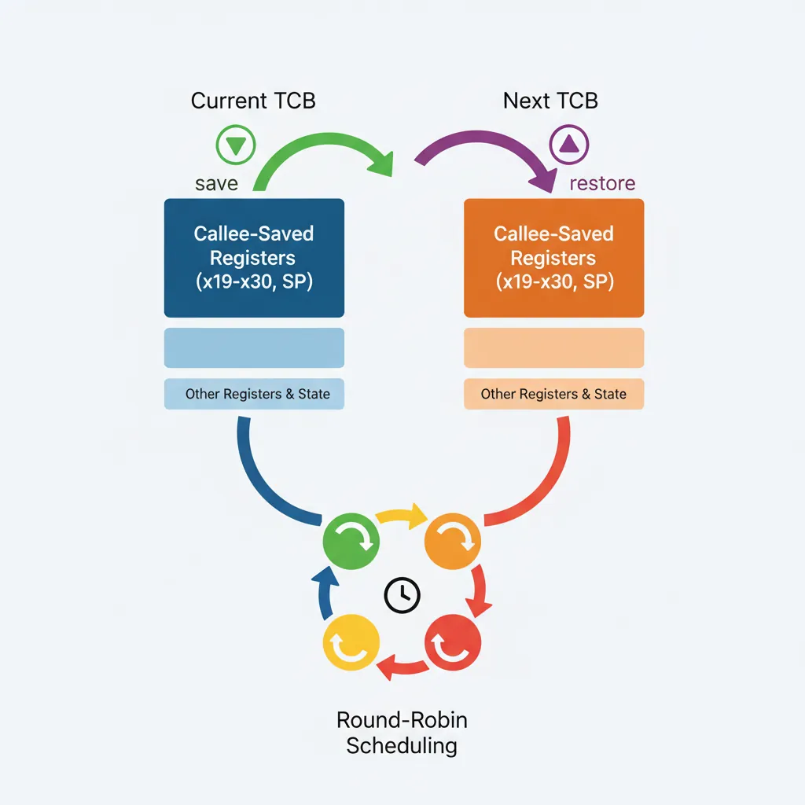

Introduction & Kernel Architecture
virt machine (ARM Cortex-A57 emulation, 128 MB RAM, PL011 UART at 0x09000000).
ARM Assembly Mastery
Architecture History & Core Concepts
ARMv1→v9, RISC philosophy, profilesARM32 Instruction Set Fundamentals
ARM vs Thumb, registers, CPSR, barrel shifterAArch64 Registers, Addressing & Data Movement
X/W regs, addressing modes, load/store pairsArithmetic, Logic & Bit Manipulation
ADD/SUB, bitfield extract/insert, CLZBranching, Loops & Conditional Execution
Branch types, link register, jump tablesStack, Subroutines & AAPCS
Calling conventions, prologue/epilogueMemory Model, Caches & Barriers
Weak ordering, DMB/DSB/ISB, TLBNEON & Advanced SIMD
Vector ops, intrinsics, media processingSVE & SVE2 Scalable Vector Extensions
Predicate regs, gather/scatter, HPC/MLFloating-Point & VFP Instructions
IEEE-754, scalar FP, rounding modesException Levels, Interrupts & Vector Tables
EL0–EL3, GIC, fault debuggingMMU, Page Tables & Virtual Memory
Stage-1 translation, permissions, huge pagesTrustZone & ARM Security Extensions
Secure monitor, world switching, TF-ACortex-M Assembly & Bare-Metal Embedded
NVIC, SysTick, linker scripts, low-powerCortex-A System Programming & Boot
EL3→EL1 transitions, MMU setup, PSCIApple Silicon & macOS ABI
ARM64e PAC, Mach-O, dyld, perf countersInline Assembly, GCC/Clang & C Interop
Constraints, clobbers, compiler interactionPerformance Profiling & Micro-Optimization
Pipeline hazards, PMU, benchmarkingReverse Engineering & ARM Binary Analysis
ELF, disassembly, CFR, iOS/Android quirksBuilding a Bare-Metal OS Kernel
Bootloader, UART, scheduler, context switchARM Microarchitecture Deep Dive
OOO pipelines, reorder buffers, branch predictVirtualization Extensions
EL2 hypervisor, stage-2 translation, KVMDebugging & Tooling Ecosystem
GDB, OpenOCD/JTAG, ETM/ITM, QEMULinkers, Loaders & Binary Format Internals
ELF deep dive, relocations, PIC, crt0Cross-Compilation & Build Systems
GCC/Clang toolchains, CMake, firmware genARM in Real Systems
Android, FreeRTOS/Zephyr, U-Boot, TF-ASecurity Research & Exploitation
ASLR, PAC attacks, ROP/JOP, kernel exploitEmerging ARMv9 & Future Directions
MTE, SME, confidential compute, AI accel
0x40000000 — kernel image load address (QEMU -kernel)
0x40000000–0x40080000 — kernel code + data (~512 KB)
0x40080000–0x40100000 — kernel stack (4 KB per task, 8 tasks max)
0x40100000–0x48000000 — free memory for bump allocator
0x09000000 — PL011 UART0 (UARTDR at +0x00, UARTFR at +0x18)
0x08000000 — GICv2 distributor; 0x08010000 — GICv2 CPU interface
Bootloader Stub (boot.S)

// boot.S — first instruction executed by QEMU -kernel
// QEMU loads ELF at 0x40000000, sets x0=DTB address, jumps to _start
.section .text.boot
.global _start
_start:
// Step 1: Only core 0 continues; park other SMP cores
mrs x1, mpidr_el1
and x1, x1, #0xFF // MPIDR.Aff0 = core number
cbnz x1, .park // cores 1+ spin here
// Step 2: Set up EL1 stack (grows down from _stack_top)
adrp x2, _stack_top
add x2, x2, :lo12:_stack_top
mov sp, x2
// Step 3: Zero .bss
adrp x3, _bss_start
add x3, x3, :lo12:_bss_start
adrp x4, _bss_end
add x4, x4, :lo12:_bss_end
.bss_zero:
cmp x3, x4
b.ge .bss_done
str xzr, [x3], #8
b .bss_zero
.bss_done:
// Step 4: Disable trapping of FP/SIMD registers at EL1
mov x5, #(3 << 20) // CPACR_EL1.FPEN = 11 (no trap)
msr cpacr_el1, x5
isb
// Step 5: Jump to C kernel_main (x0 still = DTB pointer from QEMU)
bl kernel_main
// If kernel_main returns, halt
.halt:
wfi
b .halt
.park:
wfi
b .parkUART Driver in Assembly

// uart.S — PL011 UART0 driver for QEMU virt machine
// UART0 base: 0x09000000
// UARTDR at base + 0x000 (data register: write = TX, read = RX)
// UARTFR at base + 0x018 (flag register: bit 5 = TXFF transmit full)
// UARTIBRD at base + 0x024 (integer baud rate divisor)
// UARTLCR_H at base + 0x02C (line control)
// UARTCR at base + 0x030 (control: TXE=bit8, RXE=bit9, UARTEN=bit0)
.equ UART0_BASE, 0x09000000
.equ UARTDR, 0x000
.equ UARTFR, 0x018
.equ UARTIBRD, 0x024
.equ UARTLCR_H, 0x02C
.equ UARTCR, 0x030
.equ UARTFR_TXFF, (1 << 5) // Transmit FIFO full flag
.global uart_init
.global uart_putc
.global uart_puts
// uart_init() — configure 115200 baud, 8N1, FIFOs enabled
uart_init:
mov x0, #UART0_BASE
// Disable UART
str wzr, [x0, #UARTCR]
// Set baud: IBRD = 26 → 24 MHz / (16 × 57600) = 26.04 → 115200 baud approx
// For QEMU 24 MHz UART clock: IBRD=13, FBRD=1 → 115200
mov w1, #13
str w1, [x0, #UARTIBRD]
// 8N1, FIFOs enabled: WLEN=11 (8-bit), FEN=1, STP2=0, PEN=0
mov w1, #((0b11 << 5) | (1 << 4)) // WLEN=3, FEN=1
str w1, [x0, #UARTLCR_H]
// Enable UART: UARTEN|TXE|RXE
mov w1, #((1 << 9) | (1 << 8) | 1)
str w1, [x0, #UARTCR]
ret
// uart_putc(char c) — x0 = character to send
uart_putc:
mov x1, #UART0_BASE
.wait_tx:
ldr w2, [x1, #UARTFR]
tst w2, #UARTFR_TXFF
b.ne .wait_tx // Spin while TX FIFO full
str w0, [x1, #UARTDR] // Write character to data register
ret
// uart_puts(const char *s) — x0 = null-terminated string
uart_puts:
stp x29, x30, [sp, #-16]!
mov x29, sp
mov x2, x0 // Save string pointer
.puts_loop:
ldrb w0, [x2], #1 // Load byte, advance pointer
cbz w0, .puts_done // Null terminator? exit
bl uart_putc
b .puts_loop
.puts_done:
ldp x29, x30, [sp], #16
retException Vector Table

// vectors.S — AArch64 exception vector table (must be 2KB aligned)
// Layout: 4 groups × 4 entries × 128 bytes each = 2048 bytes
.section .text.vectors
.balign 2048
.global exception_vectors
exception_vectors:
// ── EL1 with SP_EL0 (from current EL, using SP0) ──
.balign 128
b sync_sp0_handler // Synchronous
.balign 128
b irq_sp0_handler // IRQ
.balign 128
b fiq_sp0_handler // FIQ
.balign 128
b serror_sp0_handler // SError
// ── EL1 with SP_EL1 (from current EL, using SPx) ──
.balign 128
b sync_spx_handler // Synchronous (most common: fault/SVC)
.balign 128
b irq_spx_handler // IRQ
.balign 128
b fiq_spx_handler // FIQ
.balign 128
b serror_spx_handler // SError
// ── Lower EL AArch64 (from EL0, 64-bit) ──
.balign 128
b sync_el0_64_handler // SVC, data abort from user
.balign 128
b irq_el0_64_handler
.balign 128
b fiq_el0_64_handler
.balign 128
b serror_el0_64_handler
// ── Lower EL AArch32 (from EL0, 32-bit) ──
.balign 128; b unhandled // Sync
.balign 128; b unhandled // IRQ
.balign 128; b unhandled // FIQ
.balign 128; b unhandled // SError
// Minimal synchronous handler: print ESR + ELR then halt
sync_spx_handler:
mrs x0, esr_el1
mrs x1, elr_el1
mrs x2, far_el1
bl exception_report // C function: void exception_report(u64 esr, u64 elr, u64 far)
b . // Infinite loop
// Install vector table at EL1
.global install_vectors
install_vectors:
adrp x0, exception_vectors
add x0, x0, :lo12:exception_vectors
msr vbar_el1, x0
isb
retBump Allocator & Memory Map

// mm.c — bump allocator, no free()
#include <stdint.h>
#include <stddef.h>
extern char _heap_start[]; // Symbol from linker script
static char *bump_ptr;
void mm_init(void) {
bump_ptr = _heap_start;
}
// Align bump_ptr up to `align` (must be power of 2)
void *mm_alloc(size_t size, size_t align) {
uintptr_t addr = (uintptr_t)bump_ptr;
addr = (addr + align - 1) & ~(align - 1); // Align up
bump_ptr = (char *)(addr + size);
// Zero-fill the allocation
char *p = (char *)addr;
for (size_t i = 0; i < size; i++) p[i] = 0;
return (void *)addr;
}Cooperative Scheduler & Context Switch

// context.S — save/restore CPU context for cooperative scheduling
// Task control block (TCB) layout (C struct layout, 64-bit):
// offset 0: x19
// offset 8: x20 ... (callee-saved registers x19–x28)
// offset 80: x29 (frame pointer)
// offset 88: x30 (LR — resume address)
// offset 96: sp_el1 (kernel stack pointer)
// Total TCB size: 104 bytes
.global context_switch // void context_switch(struct tcb *from, struct tcb *to)
context_switch:
// Save current task's callee-saved registers to 'from' TCB
stp x19, x20, [x0, #0]
stp x21, x22, [x0, #16]
stp x23, x24, [x0, #32]
stp x25, x26, [x0, #48]
stp x27, x28, [x0, #64]
stp x29, x30, [x0, #80]
mov x2, sp
str x2, [x0, #96]
// Restore next task's callee-saved registers from 'to' TCB
ldp x19, x20, [x1, #0]
ldp x21, x22, [x1, #16]
ldp x23, x24, [x1, #32]
ldp x25, x26, [x1, #48]
ldp x27, x28, [x1, #64]
ldp x29, x30, [x1, #80]
ldr x2, [x1, #96]
mov sp, x2
ret // Returns to saved LR = task's resume address// sched.c — cooperative round-robin scheduler
#include <stdint.h>
#include <stddef.h>
#define MAX_TASKS 8
#define STACK_SIZE 4096
struct tcb {
uint64_t x19, x20, x21, x22, x23, x24;
uint64_t x25, x26, x27, x28;
uint64_t x29, x30; // frame ptr, link register
uint64_t sp_el1; // kernel stack pointer
};
extern void context_switch(struct tcb *from, struct tcb *to);
extern void *mm_alloc(size_t size, size_t align);
static struct tcb tcb_table[MAX_TASKS];
static int task_count = 0;
static int current_task = 0;
// Create a new task: allocate stack, set LR = entry, set SP top of stack
void task_create(void (*entry)(void)) {
int i = task_count++;
char *stack = (char *)mm_alloc(STACK_SIZE, 16);
uint64_t stack_top = (uint64_t)(stack + STACK_SIZE);
// Align stack to 16 bytes per ABI
stack_top &= ~15ULL;
tcb_table[i].sp_el1 = stack_top;
tcb_table[i].x30 = (uint64_t)entry; // LR = first resume address
tcb_table[i].x29 = stack_top; // FP = stack top initially
}
// yield() — save current task, switch to next (cooperative switch)
void yield(void) {
int from = current_task;
int to = (from + 1) % task_count;
current_task = to;
context_switch(&tcb_table[from], &tcb_table[to]);
}
// Start the scheduler (runs task 0, sets up first context)
void sched_start(void) {
// No 'from' for the very first switch; use a dummy TCB
static struct tcb idle_tcb;
current_task = 0;
context_switch(&idle_tcb, &tcb_table[0]);
}Build & QEMU Run
# Cross-compile for aarch64 bare-metal
CROSS=aarch64-linux-gnu-
${CROSS}gcc -nostdlib -nostartfiles -ffreestanding \
-march=armv8-a -O2 \
-T linker.ld \
boot.S uart.S vectors.S context.S \
kernel.c mm.c sched.c \
-o kernel.elf
# Extract raw binary (QEMU -kernel accepts ELF directly)
${CROSS}objcopy -O binary kernel.elf kernel.bin
# Run in QEMU virt machine (ARM Cortex-A57)
qemu-system-aarch64 \
-machine virt,gic-version=2 \
-cpu cortex-a57 \
-m 128M \
-kernel kernel.elf \
-serial stdio \
-display none
# Debug with GDB over QEMU GDB stub
qemu-system-aarch64 \
-machine virt,gic-version=2 -cpu cortex-a57 -m 128M \
-kernel kernel.elf -serial stdio -display none \
-s -S & # -s = GDB port 1234, -S = pause at boot
aarch64-linux-gnu-gdb kernel.elf \
-ex "target remote :1234" \
-ex "b _start" \
-ex "continue"Case Study: How Real Kernels Started
Linux on ARM: From 0 to 6 Billion Devices
The first Linux ARM port (1994, by Russell King for the Acorn RISC PC) started almost exactly like our kernel — a boot stub in assembly, UART output for debugging, and a hand-crafted exception vector table. Key milestones:
- 1994:
head.Sfor ARM was ~200 lines of ARM32 assembly: decompress kernel, set up MMU with tiny identity map, zero BSS, jump tostart_kernel(). Our boot.S follows the same pattern. - 2004: The ARM kernel added Device Tree support, eliminating hundreds of board-specific boot files. Before DT, each new SoC needed a unique
mach-*/directory with hardcoded memory maps — our QEMU memory map is a miniature version of this. - 2012: ARM64 (AArch64) support was merged into Linux 3.7. The
arch/arm64/kernel/head.Sbootloader is remarkably clean: park secondary cores, set up EL1 stack, enable MMU with identity map, branch to C. Our boot.S is a simplified version of this exact file. - 2024: Over 6 billion ARM-based devices run some form of Linux, from Raspberry Pi to Android phones to AWS Graviton servers — all descending from that 200-line boot stub.
Key lesson: Every production kernel started as something not much more complex than our 230-line project. The difference is years of hardening: SMP support, preemptive scheduling, virtual memory, device drivers, and security hardening.
FreeRTOS on Cortex-A: Same Pattern, Different Scale
FreeRTOS, the most popular embedded RTOS (deployed on 40B+ devices), uses the exact same context switch technique on ARM64. Its portSAVE_CONTEXT and portRESTORE_CONTEXT macros save/restore x19–x30 and SP via STP/LDP pairs — identical to our context_switch in context.S. The key difference: FreeRTOS uses timer interrupts (EL1 physical timer) for preemptive scheduling rather than cooperative yield(), and it maintains priority queues instead of our round-robin array. Understanding our cooperative version makes reading the FreeRTOS ARM64 port trivial.
Hands-On Exercises
UART String Output
Extend the UART driver to support formatted output:
- Implement
uart_puts(const char *str)that loops through characters and callsuart_putc - Implement
uart_puthex(uint64_t val)that prints a 64-bit value as0xDEADBEEFCAFEBABE(16 hex digits, zero-padded) - Use these to print the DTB address passed in X0 at boot:
uart_puts("DTB at: "); uart_puthex(dtb_addr);
Verify: Run in QEMU and confirm the DTB address prints (typically 0x40000000 + kernel_size rounded up).
Timer-Driven Preemptive Scheduling
Convert the cooperative scheduler to preemptive:
- Program the ARM Generic Timer: write
CNTV_TVAL_EL0with a 10ms interval (based onCNTFRQ_EL0), enable withCNTV_CTL_EL0 - Route the virtual timer IRQ (INTID 27) through the GICv2 distributor to CPU 0
- In your IRQ vector handler: acknowledge the GIC interrupt, call
yield(), re-arm the timer, return from exception withERET - Test: create two tasks that each print their ID in a loop without calling
yield()— the timer should force switches
Challenge: Ensure the context switch saves/restores ELR_EL1 and SPSR_EL1 so the preempted task resumes correctly at its interrupted instruction.
Identity-Mapped MMU Enable
Add MMU support to the kernel (combining Part 12 knowledge):
- Create a minimal identity-map page table: one L1 block entry mapping 0x00000000–0x3FFFFFFF as Device-nGnRnE (MMIO), another mapping 0x40000000–0x7FFFFFFF as Normal Cacheable (RAM)
- Set MAIR_EL1 with at least two attribute indices: index 0 = Device, index 1 = Normal WB cacheable
- Configure TCR_EL1 for 4KB granule, 48-bit VA space (T0SZ = 16)
- Write TTBR0_EL1, issue TLBI VMALLE1, DSB ISH, ISB, then set SCTLR_EL1.M to enable MMU
Test: After MMU enable, UART should still work (Device memory attribute preserves ordering). Print "MMU enabled!" to confirm. If the system hangs, your attribute indices are wrong — check MAIR vs page table AttrIndx.
Conclusion & Next Steps
We built a complete, runnable ARM64 bare-metal kernel: QEMU boot stub with SMP parking, PL011 UART driver, 2KB-aligned AArch64 exception vector table, bump memory allocator, and a cooperative context-switch scheduler. Total assembly: ~150 lines. Total C: ~80 lines. Every line maps directly to concepts in Parts 1–20. The case studies show how this same pattern scales from our 230-line project to Linux's 6-billion-device reach, and the exercises guide you toward preemptive scheduling and MMU-enabled operation.